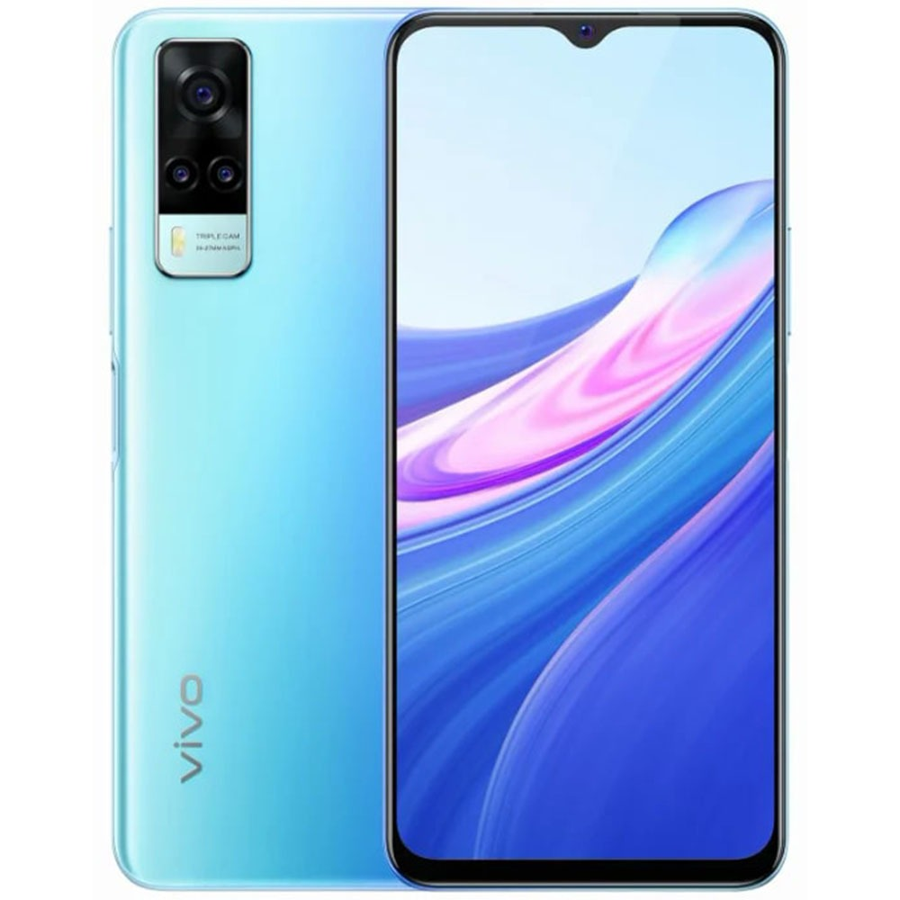

Смартфоны
Смартфон vivo Y31 128 ГБ голубой океан
Смартфон Y31 оснащен дисплеем Halo FullView™ с диагональю 6,58 дюйма, разрешением FHD+ (2408×1080) и поддержкой цветовой палитры P3, чтобы вы смогли целиком погрузиться в мир игр и видео. Для снижения нагрузки на глаза в смартфоне предусмотрена функция фильтрации вредного синего света
Характеристики товара
- Операционная система Funtouch OS
- Количество SIM-карт 2
- Стандарты связи 2G B3/5/8, 3G WCDMA B1/5/8, 4G TDD-LTE B38/40/41, 4G FDD-LTE B1/3/5/7/8/18/19/20/26/28
- Поддержка NFC есть
- Экран 6.58″
Подробное описание товара
Голубой океан. Эта расцветка смартфона Y31 навеяна красками тропического океана и дарит ощущение жизнерадостности, а переливы синего и зелёного вызывают воспоминания о беззаботном отдыхе на пляже.
Инженеры vivo объединили сканер отпечатков пальцев на боковой грани с кнопкой питания, чтобы можно было включать и разблокировать смартфон одновременно. Благодаря такому решению смартфон Y31 выглядит особенно элегантно и стильно, а его разблокировка практически не требует усилий и при включенном экране занимает всего 0,3 секунды². Кроме того, вы можете использовать технологию Face Wake, которая разблокирует смартфон, как только вы поднимаете его.
ЦЕНА 14 980 ₽